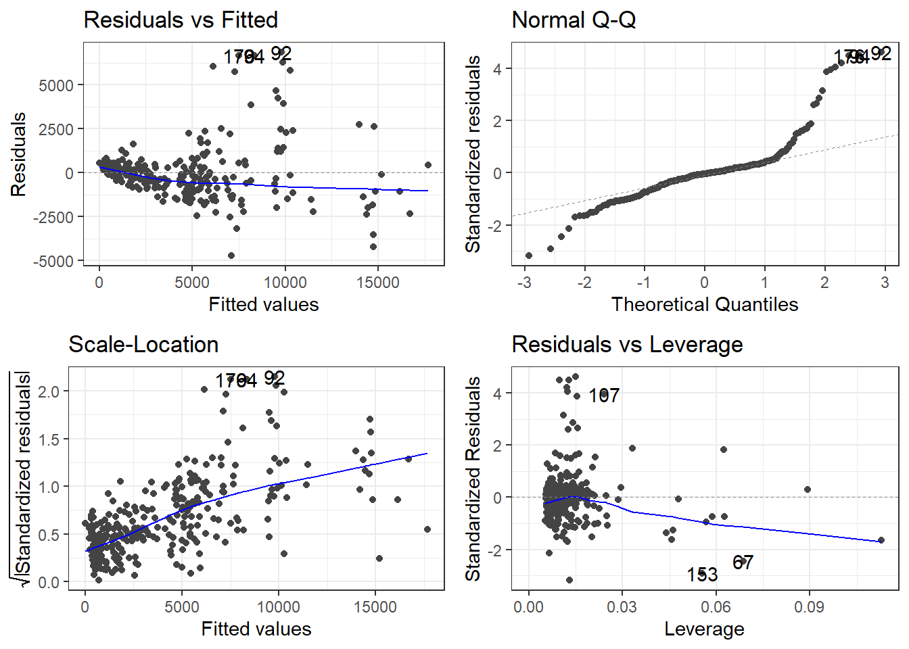
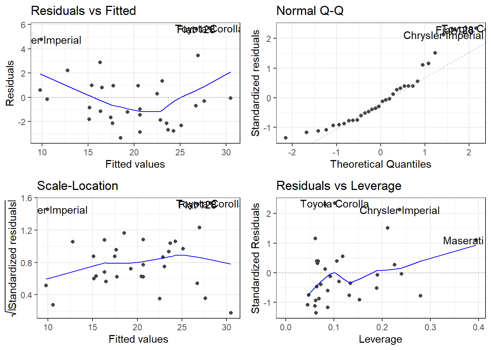

# Load packages
library(dplyr) ## Data Transformation --- T
library(ggplot2) ## Data Visualization --- V & Data Extraction
library(ggfortify) ## Data Visualization --- V
library(broom) ## Data Analysis --- A
library(lmtest) ## Data Analysis --- A
# Use a sample to simplify visualization
set.seed(123)
diamonds_sample <- diamonds %>%
sample_n(300)
# Fit multiple regression model
diamond_model_1 <- lm(price ~ carat, data = diamonds_sample)
diamond_model_2 <- lm(price ~ carat + x, data = diamonds_sample)
diamond_model_3 <- lm(price ~ carat + x + y, data = diamonds_sample) Homework 2
diamonds Analysis
summarize_reg_model <- function(model,model_description) {
# Get number of observations and predictors
n <- length(residuals(model))
p <- length(coefficients(model)) - 1
# 0) RSS
RSS <- round(sum(residuals(model)^2),2)
# 1) RSE
RSE <- round(sqrt(RSS / (n - p - 1)),2)
# 2) R-Squared and Adjusted R-Squared
R2 <- round(summary(model)$r.squared,2)
adj_R2 <- round(summary(model)$adj.r.squared,2)
# 3) AIC
aic_val <- round(AIC(model),2)
# 4) BIC
bic_val <- round(BIC(model),2)
# Create summary dataframe
mlr_metrics <- data.frame(
type = model_description,
RSS = RSS,
RSE = RSE,
R2 = R2,
Adj_R2 = adj_R2,
AIC = aic_val,
BIC = bic_val
)
return(mlr_metrics)
}Summary of Model 1
summary(diamond_model_1)
Call:
lm(formula = price ~ carat, data = diamonds_sample)
Residuals:
Min 1Q Median 3Q Max
-4762.0 -923.7 -38.7 616.7 6985.1
Coefficients:
Estimate Std. Error t value Pr(>|t|)
(Intercept) -2413.2 183.3 -13.16 <2e-16 ***
carat 7959.3 195.5 40.72 <2e-16 ***
---
Signif. codes: 0 '***' 0.001 '**' 0.01 '*' 0.05 '.' 0.1 ' ' 1
Residual standard error: 1564 on 298 degrees of freedom
Multiple R-squared: 0.8476, Adjusted R-squared: 0.8471
F-statistic: 1658 on 1 and 298 DF, p-value: < 2.2e-16Summary of Model 2
summary(diamond_model_2)
Call:
lm(formula = price ~ carat + x, data = diamonds_sample)
Residuals:
Min 1Q Median 3Q Max
-4991.1 -668.3 -35.6 282.8 6912.9
Coefficients:
Estimate Std. Error t value Pr(>|t|)
(Intercept) 5164.1 1545.6 3.341 0.000941 ***
carat 12552.7 949.7 13.218 < 2e-16 ***
x -1957.4 396.7 -4.935 1.34e-06 ***
---
Signif. codes: 0 '***' 0.001 '**' 0.01 '*' 0.05 '.' 0.1 ' ' 1
Residual standard error: 1506 on 297 degrees of freedom
Multiple R-squared: 0.8592, Adjusted R-squared: 0.8582
F-statistic: 906 on 2 and 297 DF, p-value: < 2.2e-16anova(diamond_model_1,diamond_model_2)Analysis of Variance Table
Model 1: price ~ carat
Model 2: price ~ carat + x
Res.Df RSS Df Sum of Sq F Pr(>F)
1 298 729068344
2 297 673820646 1 55247698 24.352 1.34e-06 ***
---
Signif. codes: 0 '***' 0.001 '**' 0.01 '*' 0.05 '.' 0.1 ' ' 1Summary of Model 3
summary(diamond_model_3)
Call:
lm(formula = price ~ carat + x + y, data = diamonds_sample)
Residuals:
Min 1Q Median 3Q Max
-4738.8 -636.6 -54.0 338.9 6875.0
Coefficients:
Estimate Std. Error t value Pr(>|t|)
(Intercept) 4539.7 1566.0 2.899 0.00403 **
carat 12269.7 954.1 12.859 < 2e-16 ***
x -5542.4 1766.8 -3.137 0.00188 **
y 3733.1 1793.4 2.082 0.03823 *
---
Signif. codes: 0 '***' 0.001 '**' 0.01 '*' 0.05 '.' 0.1 ' ' 1
Residual standard error: 1498 on 296 degrees of freedom
Multiple R-squared: 0.8612, Adjusted R-squared: 0.8598
F-statistic: 612.2 on 3 and 296 DF, p-value: < 2.2e-16anova(diamond_model_2,diamond_model_3)Analysis of Variance Table
Model 1: price ~ carat + x
Model 2: price ~ carat + x + y
Res.Df RSS Df Sum of Sq F Pr(>F)
1 297 673820646
2 296 664098768 1 9721879 4.3332 0.03823 *
---
Signif. codes: 0 '***' 0.001 '**' 0.01 '*' 0.05 '.' 0.1 ' ' 1summary_diamond_model_1 <- summarize_reg_model(diamond_model_1, model_description = "Model 1: Price ~ Carat")
summary_diamond_model_2 <- summarize_reg_model(diamond_model_2, model_description = "Model 2: Price ~ Carat + x")
summary_diamond_model_3 <- summarize_reg_model(diamond_model_3, model_description = "Model 3: Price ~ Carat + x + y")
bind_rows(
summary_diamond_model_1,
summary_diamond_model_2,
summary_diamond_model_3
) type RSS RSE R2 Adj_R2 AIC BIC
1 Model 1: Price ~ Carat 729068344 1564.14 0.85 0.85 5268.41 5279.52
2 Model 2: Price ~ Carat + x 673820646 1506.24 0.86 0.86 5246.77 5261.59
3 Model 3: Price ~ Carat + x + y 664098768 1497.86 0.86 0.86 5244.41 5262.93Assumptions of Model 3
autoplot(diamond_model_3) + ## from ggfortify
theme_bw()
shapiro.test(resid(diamond_model_3)) ## From base R
Shapiro-Wilk normality test
data: resid(diamond_model_3)
W = 0.81926, p-value < 2.2e-16dwtest(diamond_model_3) ## From lmtest package
Durbin-Watson test
data: diamond_model_3
DW = 2.1397, p-value = 0.8884
alternative hypothesis: true autocorrelation is greater than 0bptest(diamond_model_3) ## From lmtest package
studentized Breusch-Pagan test
data: diamond_model_3
BP = 46.049, df = 3, p-value = 5.537e-10mtcars Analysis
# Fit multiple regression models
mtcars_model_1 <- lm(mpg ~ drat, data = mtcars)
mtcars_model_2 <- lm(mpg ~ drat + wt, data = mtcars)
mtcars_model_3 <- lm(mpg ~ drat + wt + hp, data = mtcars)Summary of Model 1: mpg ~ drat
summary(mtcars_model_1)
Call:
lm(formula = mpg ~ drat, data = mtcars)
Residuals:
Min 1Q Median 3Q Max
-9.0775 -2.6803 -0.2095 2.2976 9.0225
Coefficients:
Estimate Std. Error t value Pr(>|t|)
(Intercept) -7.525 5.477 -1.374 0.18
drat 7.678 1.507 5.096 1.78e-05 ***
---
Signif. codes: 0 '***' 0.001 '**' 0.01 '*' 0.05 '.' 0.1 ' ' 1
Residual standard error: 4.485 on 30 degrees of freedom
Multiple R-squared: 0.464, Adjusted R-squared: 0.4461
F-statistic: 25.97 on 1 and 30 DF, p-value: 1.776e-05Summary of Model 2: mpg ~ drat + wt
summary(mtcars_model_2)
Call:
lm(formula = mpg ~ drat + wt, data = mtcars)
Residuals:
Min 1Q Median 3Q Max
-5.4159 -2.0452 0.0136 1.7704 6.7466
Coefficients:
Estimate Std. Error t value Pr(>|t|)
(Intercept) 30.290 7.318 4.139 0.000274 ***
drat 1.442 1.459 0.989 0.330854
wt -4.783 0.797 -6.001 1.59e-06 ***
---
Signif. codes: 0 '***' 0.001 '**' 0.01 '*' 0.05 '.' 0.1 ' ' 1
Residual standard error: 3.047 on 29 degrees of freedom
Multiple R-squared: 0.7609, Adjusted R-squared: 0.7444
F-statistic: 46.14 on 2 and 29 DF, p-value: 9.761e-10anova(mtcars_model_1, mtcars_model_2)Analysis of Variance Table
Model 1: mpg ~ drat
Model 2: mpg ~ drat + wt
Res.Df RSS Df Sum of Sq F Pr(>F)
1 30 603.57
2 29 269.24 1 334.33 36.01 1.589e-06 ***
---
Signif. codes: 0 '***' 0.001 '**' 0.01 '*' 0.05 '.' 0.1 ' ' 1Summary of Model 3: mpg ~ drat + wt + hp
summary(mtcars_model_3)
Call:
lm(formula = mpg ~ drat + wt + hp, data = mtcars)
Residuals:
Min 1Q Median 3Q Max
-3.3598 -1.8374 -0.5099 0.9681 5.7078
Coefficients:
Estimate Std. Error t value Pr(>|t|)
(Intercept) 29.394934 6.156303 4.775 5.13e-05 ***
drat 1.615049 1.226983 1.316 0.198755
wt -3.227954 0.796398 -4.053 0.000364 ***
hp -0.032230 0.008925 -3.611 0.001178 **
---
Signif. codes: 0 '***' 0.001 '**' 0.01 '*' 0.05 '.' 0.1 ' ' 1
Residual standard error: 2.561 on 28 degrees of freedom
Multiple R-squared: 0.8369, Adjusted R-squared: 0.8194
F-statistic: 47.88 on 3 and 28 DF, p-value: 3.768e-11anova(mtcars_model_2, mtcars_model_3)Analysis of Variance Table
Model 1: mpg ~ drat + wt
Model 2: mpg ~ drat + wt + hp
Res.Df RSS Df Sum of Sq F Pr(>F)
1 29 269.24
2 28 183.68 1 85.559 13.043 0.001178 **
---
Signif. codes: 0 '***' 0.001 '**' 0.01 '*' 0.05 '.' 0.1 ' ' 1Model Comparison Table
summary_mtcars_model_1 <- summarize_reg_model(mtcars_model_1, model_description = "Model 1: mpg ~ drat")
summary_mtcars_model_2 <- summarize_reg_model(mtcars_model_2, model_description = "Model 2: mpg ~ drat + wt")
summary_mtcars_model_3 <- summarize_reg_model(mtcars_model_3, model_description = "Model 3: mpg ~ drat + wt + hp")
bind_rows(
summary_mtcars_model_1,
summary_mtcars_model_2,
summary_mtcars_model_3
) type RSS RSE R2 Adj_R2 AIC BIC
1 Model 1: mpg ~ drat 603.57 4.49 0.46 0.45 190.80 195.20
2 Model 2: mpg ~ drat + wt 269.24 3.05 0.76 0.74 166.97 172.83
3 Model 3: mpg ~ drat + wt + hp 183.68 2.56 0.84 0.82 156.73 164.06Assumptions of Model 3
autoplot(mtcars_model_3) + ## from ggfortify
theme_bw()
shapiro.test(resid(mtcars_model_3)) ## From base R
Shapiro-Wilk normality test
data: resid(mtcars_model_3)
W = 0.91718, p-value = 0.01744dwtest(mtcars_model_3) ## From lmtest package
Durbin-Watson test
data: mtcars_model_3
DW = 1.706, p-value = 0.1417
alternative hypothesis: true autocorrelation is greater than 0bptest(mtcars_model_3) ## From lmtest package
studentized Breusch-Pagan test
data: mtcars_model_3
BP = 1.5987, df = 3, p-value = 0.6597